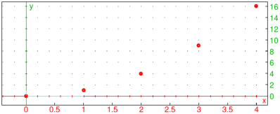
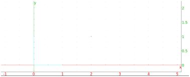

20.2.2 Scatterplots
A scatter plot is simply a set of points plotted on axes.
The scatterplot
or nuage_points
command draws scatter plots.
-
scatterplot takes two arguments:
xcoords and ycoords, a list of x-coordinates and
y-coordinates. You can also combine them into a matrix with two
columns (each list becomes a column of the matrix).
- scatterplot(xcoords,ycoords)
draws the points with the given coordinates.
The batons
command will also draw a collection of points, but each point will be
connected to the x-axis with a vertical line segment.
-
batons takes two arguments:
xcoords and ycoords, a list of x-coordinates and
y-coordinates. You can also combine them into a matrix with two
columns (each list becomes a column of the matrix).
- batons(xcoords,ycoords)
draws the points with the given coordinates and connects them to the
x-axis with vertical line segments.
Examples
| scatterplot([[0,0],[1,1],[2,4],[3,9],[4,16]],display=point_width_3+point_point+red) |
or:
| scatterplot([0,1,2,3,4],[0,1,4,9,16],display=point_width_3+point_point+red) |

| batons([[0,0],[1,1],[2,4],[3,9],[4,16]]) |
As a practical example, assume that a model of the growth of a sunflower
is given by the formula:
where t is time in days and h is plant height in centimeters.
The measured height is given in the following table:
| t (days) | 10 | 20 | 30 | 40 | 50 | 60 | 70 |
| h (cm) | 23 | 56 | 112 | 160 | 203 | 239 | 246 |
To define the function h, enter:
| h(t):=256/(1+23*exp(-0.093*t)):; |
To load the data, enter:
| tdata:=[10,20,30,40,50,60,70]:; hdata:=[23,56,112,160,203,239,246]:; |
To display the model together with data, enter:
| title="*Sunflower growth model*";
labels=["t","h"];
legend=["days","cm"];
plotfunc(h(t),t=5..75,color=blue+quadrant4,legend="model");
scatterplot(tdata,hdata,display=star_point+point_width_2+red+quadrant4,legend="data"); |
